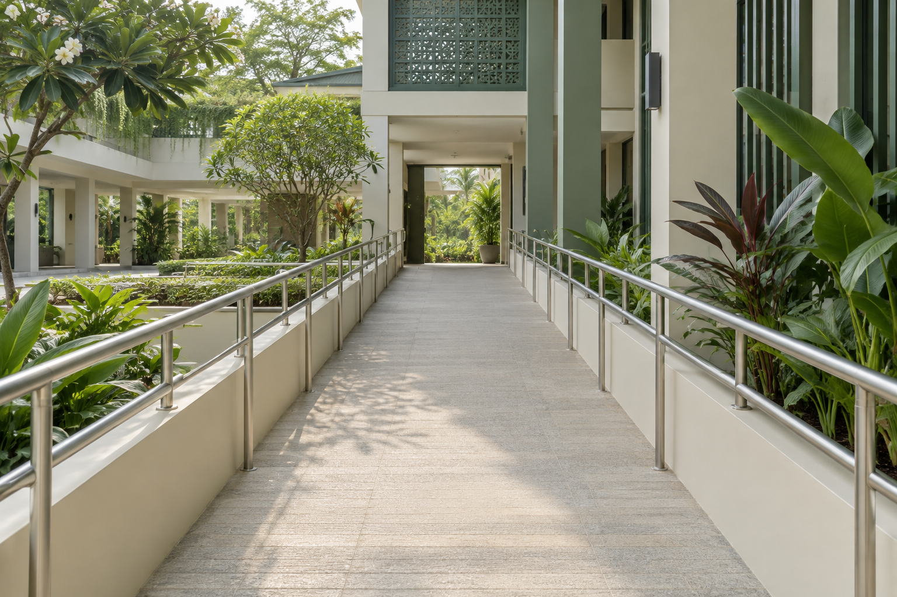

Ruang publik, untuk setiap orang.
KENALI AKSES SEBELUM BERAKTIVITASAkses yang tepat.
Akses yang tepat.
Langkah lebih nyaman.
Temukan jalur sesuai kebutuhanmu. Kenali kondisinya,
lalu bagikan pengalaman untuk sesama.
Berpusat pada kebutuhanmu.
Diperbarui bersama komunitas.
Diperbarui bersama komunitas.

Ilustrasi jalurLebih banyak akses.
Lebih banyak kesempatan.Ruang yang memberi jalan untuk semua.
Lebih banyak kesempatan.Ruang yang memberi jalan untuk semua.
01
Kami carikan jalur yang sesuai.Apa kebutuhan aksesmu?
AKSES PILIHAN UNTUKMU
Jalur yang bisa kamu gunakan 0
Jalur berdasarkan kebutuhan dan kondisi terbaru.
Lokasi, ukuran, dan kondisi awal merupakan data contoh. Cek laporan terbaru sebelum menggunakan jalur.
SEBARAN JALUR AKSES
Lantai 1Kampus Inklusif Medan
Bisa digunakanPerlu perhatianTidak bisa digunakan
Pilih nomor jalur untuk melihat gambar dan kondisinya. Peta menunjukkan segmen akses yang tersedia.
KABAR DARI SESAMA
Satu pengalaman. Banyak manfaat.
Beri rating, ceritakan kondisi jalur, dan bantu akses tetap terbuka.